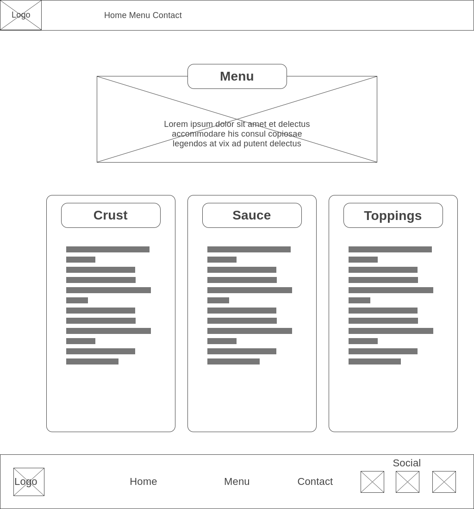
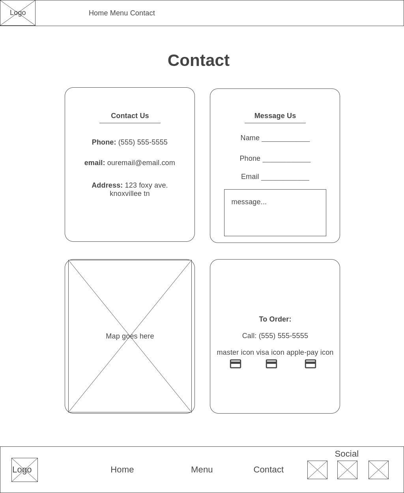

Overview
Purpose
Attracting College Groups of friends to a modern, delicious and fun pizzeria.
Audience
College students, want group fun, college age and need low prices because of school
they can't find good prices for college fun with friends.
this will be a modern site as now a days, this age is going to be suspicious if they see an 'old fashion' site.
needs not yet being met.
both desktop and mobile equally used
Navigation:
Navigation links will be available in both the navigation bar, and the footer of each page of the web site. There will be three pages for the user to navigate to. The first option is the home page, which will be the landing page for the user when they first enter Foxy’s Pizzaria’s site. The second option is the menu link. The menu will consist of the build your own options or specialty pizza menu. The final option is the contact page. This is where the user has the option to message or call the closest Foxy’s Pizzaria to their location. It will have an interactive map to make sure it is the best location for them. The order of the navigation links is designed to be the same order as most users will take from “checking it out” to finalizing their order.
The Home Page:
The home page is the first page that the user will experience when they first enter the site. The home page has an about us sections to see a brief history of Foxy’s Pizzaria, and most importantly, our mission statement.
Our Mission:
Our mission is to bring college friends or families together in a fun, modern and upbeat environment. We promise freshly sliced meats, cheeses, and never frozen products.
Testimonials:
The home page will also have a section where past guests have left reviews. We will highlight the best reviews that best highlight the values of our company. These will be fun, bubbly looking cards with quotations and tagged by the user's name.
Quick Order:
The homepage will also have a quick order button for those who already know what they want and are ready to order. The Quick Order link will be one of the first, if not the first item they see on the website. When they click the Order button, it will take them to our contact page. The menu page will have the option to message or call the restaurant. It will also give them different payment options.
The Menu Page:
The menu page is where the customers can build their own pizza. I will include our mission statement or something that highlights our values concerning the freshness of our ingredients. There will be three cards that separate the pizza-building categories. The first card will show a list of diverse types of crusts, including gluten free and vegan free. The second card will show the list of delicious, made in-house sauces. The third card will show the different toppings of fresh meats, cheeses, and vegetables. Below the three cards will show a menu of pizzas and specialty pizzas.
The Contact Page:
The contact page will give the user more information about the location of Foxy’s Pizzaria including an interactive map that the user can drag, zoom in and out and enter street view. The contact page will also provide a phone number, email address, address to the pizzeria. There will be an option to “Message Us” if the user is too shy, or unable to speak to us on the phone.
The Why:
People will come to my site to see our menu and feel our modern vibe. Our customers will also come to see what types of pizza toppings and specialties are available. They will also be able to see testimonials from other guests for further information.
The Answers to their questions:
Visitors to the Foxy’s Pizzaria website will wonder where it is located, how to order, if pick up is available and if it is a good place to hang out with friends while they eat. They will also wonder what types of crusts, sauces and toppings are available on the menu.
Activities Users Experience:
The different activities that we expect the users to experience on the site are navigation, building their own pizza using the menu choices, and calling or messaging us to place an order. They will also be able to use an interactive map to ensure they know the location.
Why is the site necessary:
The site has the complete menu and messaging functionality to ask questions, placing an order through messaging or calling. We have the address, interactive map, and customer reviews all in one place.
Branding
Website Logo
Style Guide
Color Palette
Palette URL:
https://coolors.co/565554-2e86ab-f6f5ae-f26419-db222a| Primary | Secondary | Accent 1 | Accent 2 | Accent 3 |
|---|---|---|---|---|
| [#565554] | [#2E86AB] | [#F6F5AE] | [#F26419] | [#DB222A] |
Typography
Heading Font: 'Ubuntu', sans-serif;;
Paragraph Font: 'Poppins', sans-serif;
Normal paragraph example
The best Whitewater Rafting in Colorado, White Water Rafting Company offers rafting on the Colorado and Roaring Fork Rivers in Glenwood Springs. Since 1974, we have been family owned and operated, rafting the Shoshone section of Glenwood Canyon and beyond.
Colored paragraph example
Trips vary from mild and great for families, to trips exclusively for physically fit and experienced rafters. No matter what type of river adventures you are seeking, White Water Rafting Company can make it happen for you.
Navigation
Site Map
Wireframes
Home

Menu
Contact Us
Images
Home Page


Menu


Contact Us